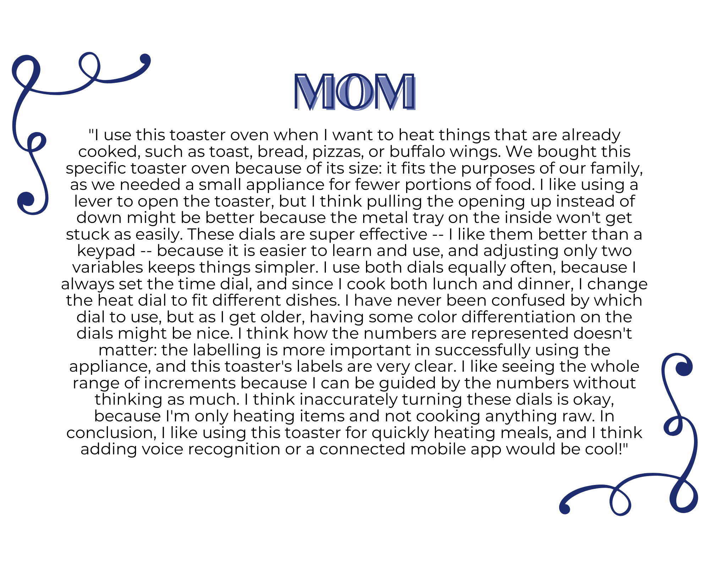
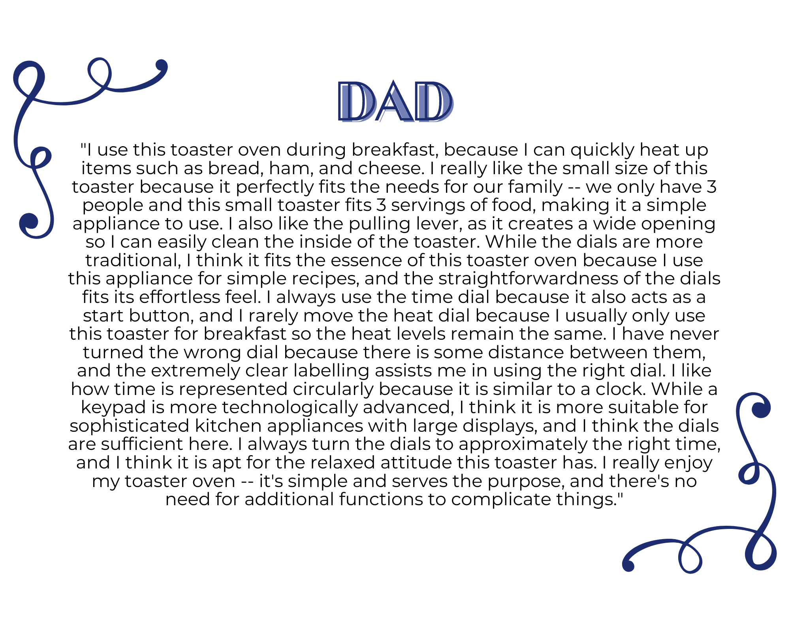

The purpose of a toaster oven is to offer a more compact, versatile, and efficient alternative to a regular oven, making it easier and more accessible for everyday use. Its key components are the two dials that control heat and time, which are labeled with increasing intervals that fit each function. These toaster ovens are typically found in homes and other living areas that may require a smaller substitute for large ovens, or are used by people who enjoy the convenience of a small toaster oven. Note: I chose this interface because I mainly stay at home and we don't have many appliances and interfaces -- sorry!! :(
I interviewed my parents in person so they could interact with the toaster oven, and one friend over Zoom (I sent her pictures of the toaster and dials). I purposefully chose these people because they represented a range of age, gender, and socioeconomic demographics. During these interviews, I noticed:
Questions:
Interview Responses:
 This storyboard is written for Practical Peggy, and shows how she uses the toaster oven for dinner. After coming home from a tiring day from work, Peggy uses the toaster oven to quickly make pizzas and buffalo wings for her family. She can easily control the toaster to make these simple recipes, so the toaster is a practical and efficient solution to her dinner challenges.
I used Canva to create the empathy maps and the storyboard, and also used the following images: